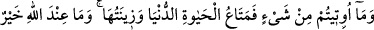

NE OLURDU
DOĞRU YOLA GİRSELERDİ!
60. Size verilen şeyler, dünya hayatının geçim vâsıtası ve süsüdür. Allah katında
olanlar ise, daha hayırlı ve daha kalıcıdır. Hâla buna aklınız ermeyecek mi?
61. Şu halde, kendisine güzel bir vaadde bulunduğumuz ve ardından ona kavuşan
kimse, (sırf) dünya hayatının geçici menfaat ve zevkini yaşattığımız, sonra kıyamet
gününde (azap için) huzurumuza getirilenler arasında bulunan kimse gibi midir?
62. O gün Allah onları çağırarak: Benim ortaklarım olduklarını iddiâ ettikleriniz
hani nerede? diyecektir.
63. (O gün) aleyhlerine söz (hüküm) gerçekleşmiş olanlar: Rabbimiz! Şunlar
azdırdığımız kimselerdir. Biz nasıl azmışsak onları da öylece azdırdık (yoksa onları
zorlayan bir gücümüz yoktu. Onların suçlarından) berî olduğumuzu sana
arzederiz. Zaten onlar aslında bize tapmıyorlardı (kendi arzularına tapıyorlardı),
derler.
64. “(Allah’a koştuğunuz) ortaklarınızı çağırın!” denir, onlar da çağırırlar; fakat
kendilerine cevap vermezler ve (karşılarında) azâbı görürler. Ne olurdu (dünyada
iken) doğru yola girselerdi!
65. O gün Allah onları çağırarak: Peygamberlere ne cevap verdiniz? diyecektir.
66. İşte o gün onlara bütün haberler körleşmiştir (delilleri tükenmiş, söyleyecek
sözleri kalmamıştır); onlar birbirlerine de soramayacaklardır.
67. Fakat tevbe eden, îman edip iyi işler yapan kimseye gelince, onun kurtuluşa